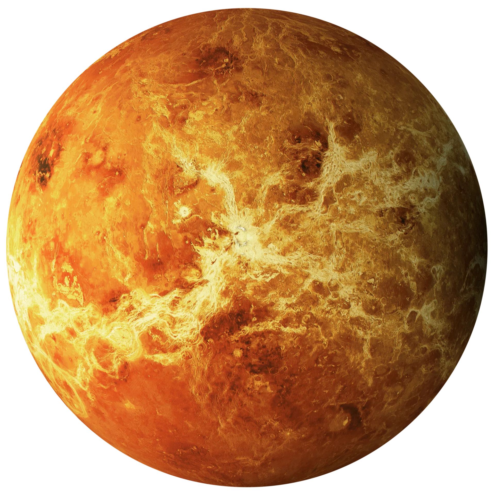

Los Planetas del Sistema Solar
Planetas
Planetas vistos de Saturno al Sol

Lunas
Vista de Jupiter
Planetas
Planetas
Lista de planetas en orden del mas cercano al sol al mas alejado
- Mercurio
- Venus
- Tierra
- Marte
- Jupiter
- Saturno
- Urano
- Neptuno
Mercurio
Mercurio es el planeta más cercano al Sol y el más pequeño del sistema solar. Recibe su nombre en honor al dios romano Mercurio, que era el mensajero de los dioses y el dios del comercio y los viajeros. A pesar de su proximidad al Sol, explorar y estudiar Mercurio ha sido un desafío para la ciencia debido a las difíciles condiciones a las que se enfrenta.
Venus

Es conocido como el "planeta hermano" de la tierra debido a su tamaño similar. Es el segundo planeta más cercano al Sol y tiene una atmósfera densa compuesta principalmente de dióxido de carbono. Es extremadamente caliente, con una temperatura promedio de alrededor de 450 grados Celsius, y su superficie está cubierta de volcanes y llanuras rocosas.
Tierra
Es nuestro hogar y el único planeta conocido que alberga vida. Tiene una atmósfera rica en oxígeno y una superficie diversa que incluye océanos, continentes, montañas y una variedad de ecosistemas. Es el tercer planeta desde el Sol y cuenta con una amplia gama de condiciones climáticas y habitabilidad.
Marte
-PhotoRoom.png-PhotoRoom.png)
También conocido como el "Planeta Rojo", es el cuarto planeta desde el Sol. Tiene una delgada atmósfera compuesta principalmente de dióxido de carbono. La superficie muestra signos de erosión y cuenta con montañas, cañones y enormes volcanes. Hay evidencia de que en el pasado pudo haber tenido agua líquida en su superficie.
Jupiter
Es el planeta más grande del sistema solar y el quinto desde el Sol. Es un gigante gaseoso compuesto principalmente de hidrógeno y helio. Tiene una atmósfera turbulenta con bandas de nubes y presenta una gran mancha roja, que es una tormenta gigante. También tiene una serie de lunas, siendo las cuatro más grandes conocidas como las lunas galileanas: Ío, Europa, Ganimedes y Calisto.
Saturno
Saturno es famoso por sus impresionantes anillos, que están compuestos principalmente de partículas de hielo y rocas. Es el sexto planeta desde el Sol y es otro gigante gaseoso. Saturno tiene una atmósfera similar a la de Júpiter y también cuenta con una serie de lunas, siendo la más destacada Titán, la segunda luna más grande del sistema solar.
Urano
Es un gigante gaseoso que se encuentra en la séptima posición desde el Sol. Es conocido por su característico color azul verdoso, causado por la presencia de metano en su atmósfera. Urano tiene anillos al igual que Saturno, aunque son mucho menos visibles. También tiene numerosas lunas, entre las que se destaca Miranda.
Neptuno
Es el octavo y último planeta reconocido en el sistema solar. Es otro gigante gaseoso, similar a Júpiter y Saturno, y tiene una atmósfera compuesta principalmente de hidrógeno y helio, con trazas de metano que le dan un color azul intenso. Neptuno tiene vientos muy fuertes y cuenta con lunas y anillos. Su luna más notable es Tritón, que se cree que es un objeto capturado por la gravedad de Neptuno.